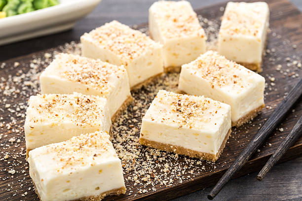

This dessert combines two beloved desserts cheesecake and churros! They are cupcake-sized treats
of cinnamon cheesecake over a crust of crunchy cinnamon cereal. They are a fall must have!
- 12 cupcake liners
- 1 1/2 cups cinnamon cereal, such as Cinnamon Toast Crunch ™
- 1/8 cup butter, melted
- 1 (8-ounce) package cream cheese, softened
- 2 tablespoons sour cream
- 2 medium eggs
- 1/2 teaspoon vanilla extract
- 1 1/2 teaspoons ground cinnamon
- Gather all ingredients.
- Preheat the oven to 325 degrees F (165 degrees C).
- Line a standard 12-count cupcake tine with cupcake liners; set aside.
- Place cereal in a gallon-size resealable plastic bag and reseal.
- Using a rolling pin, roll over the bag to crush the cereal into fine crumbs.
- Pour cereal into a bowl.
- Pour melted butter over cereal.
- Using a fork, mix butter into cereal until well combined.
- Scoop a large spoonful of cereal mixture into each cupcake liner; press down to form a crust.
- Add more to each liner until cereal mixture is evenly divided; set aside.
- Add cream cheese to a mixing bowl.
- Beat on medium to low speed with an electric mixer until cream cheese is fluffy and no large lumps are left.
- Add sugar, then beat until smooth.
- Beat in sour cream.
- Add the eggs, 1 at a time, mixing completely before adding the next one.
- Mix in vanilla and cinnamon.
- Gently pour the batter over the cereal filled liners, a little at a time until each one is about half way full and all the batter is used.
- Bake in the preheated oven until batter is set, about 20 minutes. The cheesecakes should jiggle just slightly when the pan is gently shaken.
- Let cool for about 15 minutes.
- Top each one with a peuce of cereal.
- Chill in the refrigerator before serving.
- SERVE!